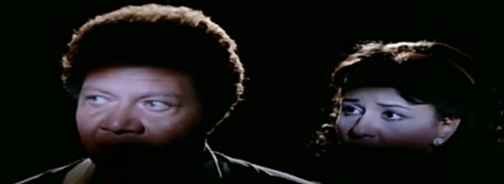
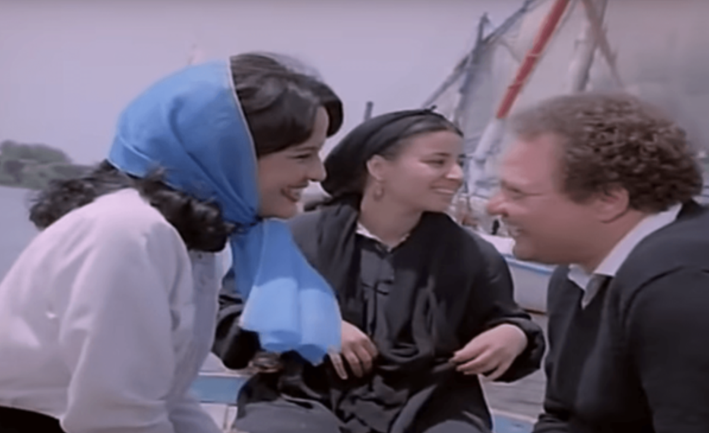
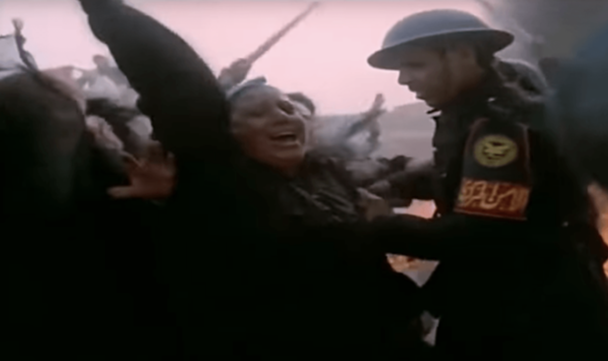
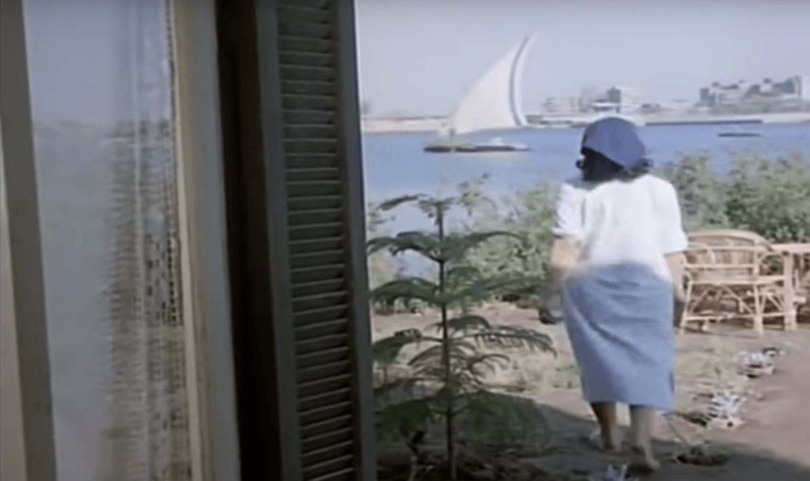
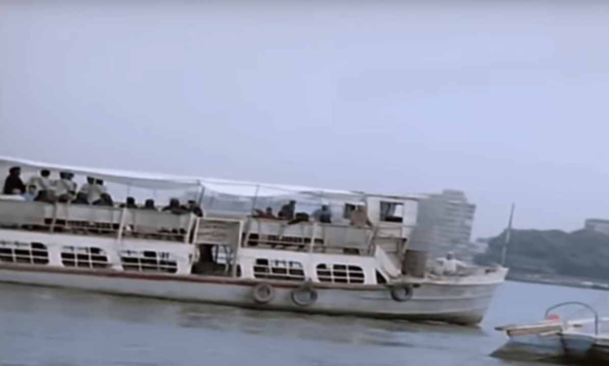
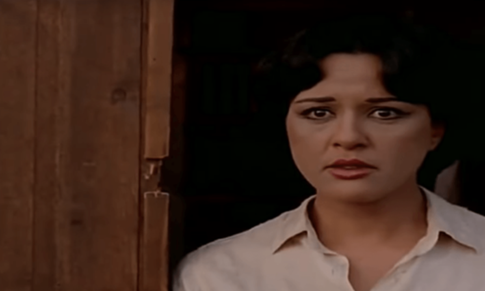
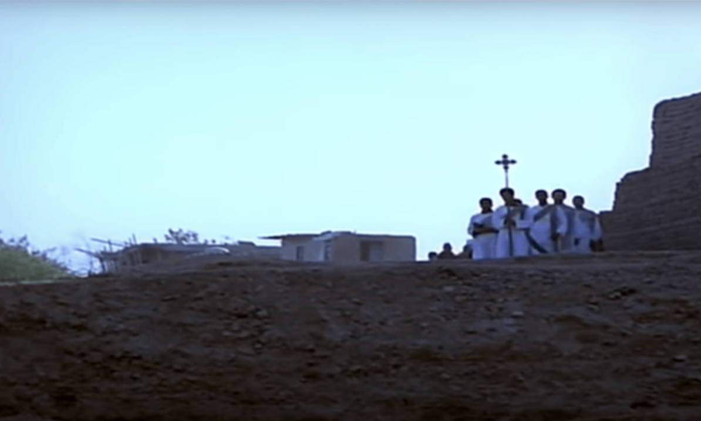

Still from Raafat al-Mihi's Lil Hobb Qissa Akheera (Love's Last Story, 1986)
Nothing speaks to the crisis of faith that afflicted the post-independence generation in Egypt quite like the cinematic experiments of the 1980s. Confronted with defeat, a massive neoliberal economic shift and an overpowering sense of failed idealism, the filmmakers of the era attempted to reflect on these experiences by exploring a new visual language that is as critical as it is poetic. Writer-director Raafat al-Mihi's third feature film, Lil Hobb Qissa Akheera (Love's Last Story, 1986) navigates all these tropes through a doomed love story set on Warraq Island. Primarily told through the lives of women living there, the film uses the neighborhood as a microcosm that represents what was happening in Egypt at the time, combining potent symbolism with an unflinching awareness of the surrounding reality.

Warraq Island as depicted in the film
In 1998, Warraq Island was listed as a "natural reserve" and fell under the jurisdiction of the Environment Ministry. In less than two years, Prime Minister Atef Ebeid would issue Decree 542/2001, stripping the island of its protected status and reclaiming it as "state property set for public utilization" (a broad term that usually entails selling the land to private investors), sparking a protracted dispute between the island's residents and the government.
Recorded settlement on the island dates back to the early 1900s, when the land was reclaimed and became famous for its potato produce. In the 1950s, Warraq was the site of burgeoning informal housing, which was accompanied by problems related to a lack of formal infrastructure and sanitation. This simultaneously posed a threat to the government's plans to demolish informal settlements in prime locations around Cairo and sell the land to giant real estate conglomerates.
Love's Last Story features a scene of uncanny similarity to the clashes that took place on July 16, 2017. We see police forces tearing down and setting fire to informal camps and sheds constructed around the shrine of a false saint, while residents resist. The image, saturated with fire and smoke, and showing angry men in uniform beat the women and arrest the men, is Mihi's reckoning with the state and its brutality. He reaffirms cinema as a way of seeing that is unbound by time; a medium that imagines what is yet to happen as it wrestles with the present.

A scene showing state violence against island residents
Love's Last Story is one of Mihi's last films to attempt a stab at social critique and the use of realism before his switch to fantastical comedies like Al-Sada al-Rigal (Misters, 1987) and Samak, Laban, Tamr Hindi (Fish, Milk and Tamarind, 1988). It is also the first film he made after the controversy stirred by his film Al-Avvocato (The Lawyer, 1983), which ruffled a few feathers with its acerbic portrayal of Egyptian lawyers and the judicial system. The film incurred the wrath of the belligerent Lawyers Syndicate, which filed over 100 cases against the film's lead Adel Imam, and landed the actor a prison sentence meted out by none other than the combative, foul-mouthed judge Mortada Mansour. Legend has it that Mansour resigned on the spot during a court session after instructions were given for the sentence to be revised.
Love's Last Story is more in line with Mihi's debut feature, Oyoun La Tanam (Eyes That Don't Sleep, 1981), based on Eugene O'Neill's Desire Under the Elms (1924), reflecting the writer-director's background in English literature.
O'Neill's play is his own modern retelling of Hippolytus by Euripides, and Mihi retains the tragic impetus and dramatic claustrophobia in his film, set in an auto-repair shop in downtown Cairo.
Love's Last Story also joins the canon of films produced by the New Cinema Group, founded in 1968 by a number of young filmmakers in Egypt who questioned the way through which the language of cinema can interrogate social reality in the wake of Egypt's defeat in the 1967 war and the massive economic disruptions caused by former President Anwar Sadat's liberalizing open-door policy. Like the work of Mihi's contemporaries, such as Khairy Bishara's Al-Tawq wal-Iswira (The Necklace and the Bracelet, 1986), for example, the film dwells on disillusionment with belief, tradition and societal acquiescence in the face of injustice and government corruption and incompetence.

Mahmoud Abdel Samie's distinctive cinematography
Mihi did not veer too much from Egyptian cinema's tradition of interrogating and critiquing folkloric forms of religiosity and spirituality, associating them with ignorance, fatalism, economic exploitation and at times even homicide. In the same year, Ahmed al-Sabawy directed Daqit Zar (Zar's Rhythms), a film which did just that.
Mihi goes a step beyond just rehashing Egyptian cinema's distrust and loathing of folkloric religiosity, though. He uses Warraq as a backdrop for the 1980s crisis of governance. The island, scenic and picturesque, is also underdeveloped, as it lacks basic infrastructure. It has no power, no paved roads, no hospital, no cemetery and just one barely functioning school. It is amid the tension created in a locale that retains a unique scenography and particular rhythm, but is also beset with endemic problems, including state negligence, that Mihi sets his story. The island's peculiar nature is captured with a dramatic flair by Mihi's director of photography Mahmoud Abdel Samie: panned out shots, wide angles and a meandering camera, reminiscent of his work in Al-Zammar (The Piper, 1984) by Atef al-Tayeb.

The ferry as a central metaphor in the film
Just like in Eyes That Don't Sleep, most of the events take place in one setting. Once again, Mihi uses the unity of space as a way to condense action, creating a sense of interiority or even isolation. The trials of the two lovers, the emotionally volatile Salwa (played by Maaly Zayed) and the ailing yet fun-loving Refaat (a young, clownish Yahia Al-Fakharny) transform into a profound questioning of the limits of scientific progress, the burdens of tradition and the unforgiving reality of living in the 1980s, complicated by Warraq itself, as a self-contained space with its own norms and narratives.
Entire sequences in the film take place on the ferry, the only way to move in or out of the island, and Mihi uses them to maximum effect. The vehicle becomes a conduit — in a very real sense — of joy, grief, arrival, departure and eventual life and death. In its motion, back and forth, the metaphor of one's life journey is mirrored.

Maaly Zayed and other female characters in the film
Unlike Al-Avvocato, where women were relegated to the role of exchangeable sex objects (there are barely two occasions on which Youssra, the female lead, appears in the film outside of a sex scene), in Love's Last Story Mihi portrays a more sensitive imagining of women and their roles. No other director managed to get so much out of Zayed, making perfect use of her range and giving her the cinematic space to fully embody her character as the earnest Salwa. Her performance is complemented by other remarkable female roles, including the explosive Tahiya Karioka as Refaat's mother, and a young, brilliant Abla Kamel as Salwa's housekeeper.
It is mostly women who believe the false saint and his prophecies, and it is also women who seek redress to the injustices they face daily. Mihi critiques the system that oppresses women, but blames them all the same.
One more thing that truly stands out in the film is its elaborate portrayal of Coptic rituals and characters in a way that is rarely shown in Egyptian cinema. Love's Last Story implicates Coptic religiosity in the same system of belief that perpetuates ignorance and injustice. In the beginning of the film, for instance, an elderly Coptic woman is seen talking about lighting two candles at St. Demiana's Church, asking for her intercession. However, it is to Mihi's credit that Coptic subjects, for a change, are fully realized and seen as an indispensable part of the community. He even goes as far as dedicating an entire scene where a group of Coptic youth chant the prayer of Kyrie eleison while transporting the body of a dead Coptic woman.

The film's tragic conclusion
There is something terminal and tragic about Love's Last Story. In an iconic final scene, Salwa destroys the shrine of the false idol, while women clad in black lament their fates, still seeking his intercession.
The crisis of faith evoked in the film, against conditions of scarcity, injustice and corruption, places Mihi's work among other classics made by his contemporaries — some even produced in the same year, such as Tayeb's Al-Hobb Fawq Hadabat Al-Haram (Love Over the Pyramid Plateau, 1986) and Ali Badrakhan's Al-Goua (Hunger, 1986) — whose keen sense of reality and fully realized artistry spoke of a tragedy foretold, one that has been unraveling until this day.